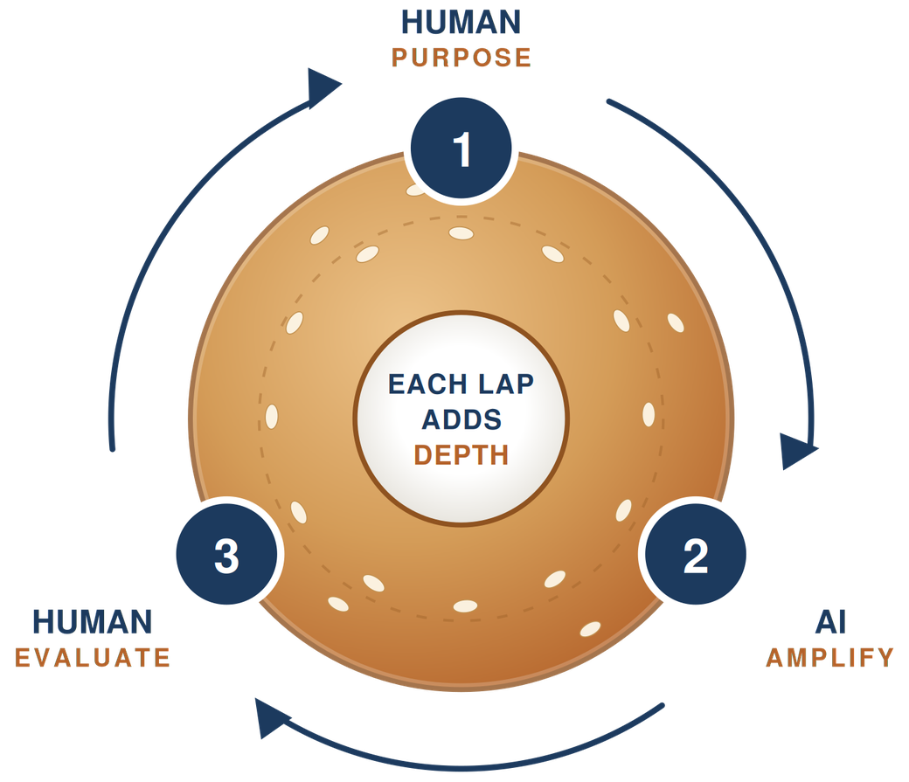

Free Resource · Framework
The AI Bagel Framework
Human → AI → Human — the loop that gets stronger every pass.
Every AI tool we use should run through the same three steps: you bring the purpose, AI amplifies it, you evaluate before accepting it. Then you send it back around.

1 Human
Purpose
You bring the idea, the goal or problem, and the context only you have. Include your standards, your student profile, last week's misconceptions. Identify what a good result looks like before you start.
2 AI
Amplify
AI expands what you gave it — more options, faster drafts, a wider net to choose from. It isn't deciding anything; it's widening the field you decide from.
3 Human
Evaluate
You judge the output against your purpose. Accept it, reject it, or send it back with sharper feedback. Nothing reaches a student that hasn't cleared this step. At the end of the day, you are responsible for anything you create.
How to use it
One task, three laps.
The task: building a Socratic seminar question set for a 9th grade ELA unit, or having students design their own study questions on a specific text. Same three steps every lap. The loop becomes more precise with every cycle.
-
Lap 1 · Rough
Get something on the table
"Give me discussion questions for this novel." AI returns generic prompts. Potentially usable — but they could belong to any classroom or student in America. You keep two, cut the rest.
-
Lap 2 · Contextualized
Feed it what only you know
You add the standards, your students' reading levels and profiles (never identifiable information), and the misconception half the class had Tuesday. AI's next draft fits your classroom and your goals, and keeps improving with every iteration.
Students: identify the problem you are having, add context from the class (information, articles, resources), then ask the AI to help you with the process rather than completing the assignment for you. Learn how to think rather than offloading tasks you don't want to do.
1. Brain first · 2. Tool second
-
Lap 3 · Sharpened & owned
Push it past your first draft
You evaluate again, cut what's flat, and push toward higher-order questions. What comes back is something only you or your class could use.
Students and teachers must be able to defend what they create, design, brainstorm, or study with an AI tool. If you cannot defend it, you are suspending cognitive functioning, not using AI responsibly.
Try it this week
Take one thing already on your plate — a rubric, a parent email, a warm-up, a study guide — and run it three laps instead of one. Time-box it to ten minutes. Compare your first cycle to your last cycle.
Why it matters
You are the chef.
AI is like tofu — you are the chef, and the AI takes on the flavor of whatever context you feed it. A vague prompt gets a generic output, but a prompt grounded in your standards, your students, and your professional judgment gets something worth using.
As a student, having a clear problem, a clear objective, and the ability to evaluate AI outputs builds cognitive discipline and deeper critical thinking. The Bagel Framework is how I stay in dialogue with the AI and lead the charge of that flavor, loop after loop.